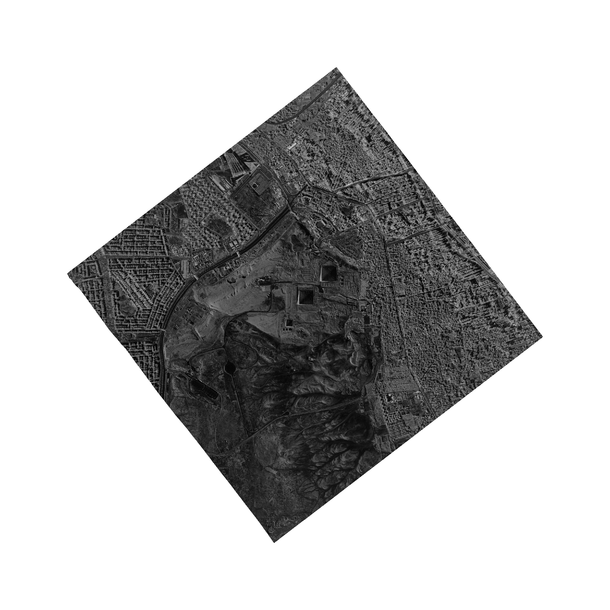

Can radar find a room inside a pyramid?
Start with a room we can already enter. If a satellite can locate it twice, with the same settings, we have a reason to test deeper.
Watch on YouTube Shorts ↗What the evidence shows
| Question | Finding |
|---|---|
| Did anyone report shafts? | Yes. The Khafre team reported eight. Their geometry remains unverified. |
| Did the known room repeat? | Queen’s Chamber beat 23 of 24 controls in October, 6 of 24 in September. |
| Can anyone check the numbers? | Yes. Two free radar scenes and the scoring audit are linked below. |
The claim and the independent check
In 2022, Filippo Biondi and Corrado Malanga proposed reading tiny surface vibrations from satellite radar. They mapped those signals to candidate rooms in Khufu’s pyramid. The journal retracted the paper in August 2026 over methodological and statistical problems. The authors dispute the decision. Paper · Retraction
In 2025, the team reported shafts extending roughly 650 metres beneath the neighbouring pyramid of Khafre. In November 2026, Trevor Grassi presented Manu Seyfzadeh’s independent reconstruction. It showed patterns resembling known features and parts of the earlier images. The report describes choosing sections through known rooms and aligning them by hand. Neither report supplies an independent physical measurement of the deep shafts. Conference abstract · Grassi’s comparisons

4 Oct 2024 · Image credit
One room, two dates
Pietro Canini tested his own reconstruction on known rooms with nearby control positions. In his finer-resolution test the Queen’s Chamber contrast also changed sign between dates. We recomputed the scores from his published contrasts. This audit starts after image processing. A fresh reconstruction from the satellite files remains open. Protocol and measurements
| Date (UTC) | Controls beaten | Contrast sign |
|---|---|---|
| 4 Oct 2024 | Negative | |
| 16 Sep 2024 | Positive |
The preset rule required the chamber to beat every eligible control and keep the calibration sign. Neither date passed. Published values
Download the data and reproduce the scores
Python 3.11 or newer is enough for these two scripts. Start with the scoring audit. Download the phase-preserving radar images when you are ready to process them. Allow 7 GB for the two downloads and extra space for processing.
git clone https://github.com/kravtsovd/giza-radar-check.git cd giza-radar-check python3 tools/audit.py python3 tools/fetch.py --metadata-only downloads python3 tools/fetch.py downloads
Both Capella C13 acquisitions used HH polarization and Spotlight mode. The September file is 3.13 GB and the October file is 3.64 GB. We downloaded both and computed SHA-256 checksums. Both metadata hashes match Canini’s published record. Direct downloads, sizes and hashes · Capella license · Protocol fingerprints
Compare the audit with our saved output. “Undefined” means that the calculation produced no usable value. A rank counts the nearby positions the target beat in absolute contrast.
The two processing routes use different inputs. Canini starts with focused complex images (SLC); his published code omits some reader and geometry modules. ResonarSat’s pulse-by-pulse workflow takes phase-history data (CPHD). Its October file is 39.18 GB. We built the pinned code and ran its 23 tests. Passing those software checks does not establish depth accuracy. Pinned implementation · CPHD download · Patent
The proposed test and what would change our minds
- Use the two public scenes to develop and debug the pipeline. Publish the image reader, phase convention, geolocation, filters and depth conversion.
- Before opening a fresh test scene, freeze the code, score, spatial tolerance, minimum number of eligible controls and treatment of missing measurements. The two published scores are already known.
- Give the operator anonymized targets and matching control locations. Record a coordinate, depth, uncertainty and detection decision for each. Reveal surveyed plans only after saving the predictions.
- Report depth errors, missed rooms, false alarms and unusable locations. Repeat across dates. Release negative results with the same input and settings.
- Before interpreting a 650 m feature, repeat the test over a surveyed deep tunnel. Confirm any new Giza target with an independent ground measurement.
If it works, archaeologists could rank field survey sites and choose where to place instruments. Success on a shallow room would establish performance only at that depth. A separate project already demonstrated how muon measurements can establish corridor dimensions inside Khufu. Muon corridor study
Original Italian acquisitions and the Korean archive
Table 2 of the original paper identifies six interior acquisitions over Khufu. Search COSMO-SkyMed Second Generation Spotlight, then request complex Level 1A and the product IDs. ASI accepts research proposals for a free allocation, subject to approval. Original table · ASI application
| Date | Look / orbit | Beam / polarization |
|---|---|---|
| 25 Feb 2022 | Left / descending | 46 / VV |
| 16 Nov 2021 | Right / descending | 48 / HH |
| 22 Feb 2022 | Right / descending | 48 / VV |
| 16 Feb 2022 | Right / ascending | 48 / VV |
| 25 Mar 2022 | Right / descending | 48 / VV |
| 26 Apr 2022 | Right / descending | 48 / VV |
In Korea’s SpaceEye catalogue, search the box 29.96 to 29.99° N, 31.12 to 31.15° E. Our search returned 13 catalogue records with footprints. One was Spotlight HR, Level 1A with phase: K5_20140221035009_000000_02745_A_HR10_HH_L1A. The footprint covers both pyramids. Its catalogue interval is about three seconds. Ask SIIS to confirm target dwell, metadata and license before ordering. After login, use Sample Request for a free evaluation copy. Ask for complex phase, orbit and timing metadata, target dwell, Doppler bandwidth and permission to share derived results. For a purchase, request an archive quote for the exact ID. A reseller listed archived Spotlight at US$1,400 per scene in 2021; the current price requires a fresh quote. Historical price list. SpaceEye · Sample requests